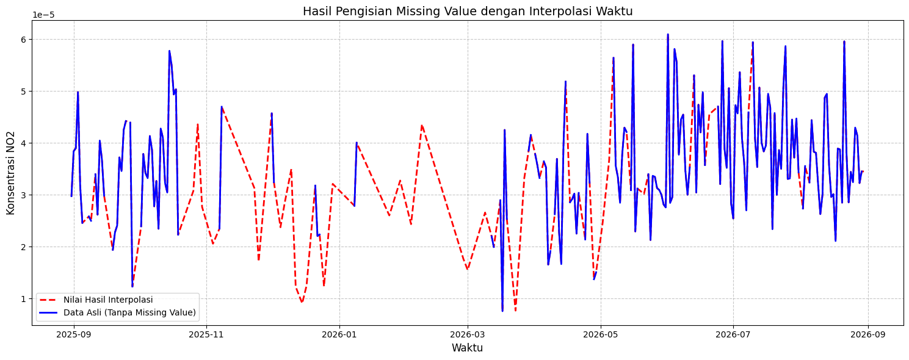

import openeo
connection = openeo.connect("openeo.dataspace.copernicus.eu").authenticate_oidc()
Authenticated using refresh token.
aoi = {
"type": "Polygon",
"coordinates": [
[
[
112.07070429065317,
-7.036265783748036
],
[
112.19740799249746,
-7.036224356301773
],
[
112.19740713316935,
-7.101920167256907
],
[
112.07064606635191,
-7.101920088468077
],
[
112.07070429065317,
-7.036265783748036
]
]
]
}
s5post = connection.load_collection(
"SENTINEL_5P_L2",
temporal_extent=["2025-08-31", "2026-08-31"],
spatial_extent={
"west": 112.07064606635191,
"south": -7.101920088468077,
"east": 112.19740799249746,
"north": -7.036224356301773
},
# Disesuaikan dengan data yang dibutuhkan
bands=["SO2"],
)
# Agregasi harian agar tidak ada lebih dari satu data per hari
s5p_so2_daily = s5post.aggregate_temporal_period(reducer="mean", period="day")
# Agregasi spasial untuk menghasilkan rata-rata time series per AOI
s5p_so2_aoi = s5p_so2_daily.aggregate_spatial(reducer="mean", geometries=aoi)
# Simpan hasil sebagai CSV
result = s5p_so2_aoi.save_result(format="CSV")
# Jalankan job
job = result.create_job(title="s5p_so2_timeseries")
job.start_and_wait()
# Download
job.get_results().download_files("output_so2")
0:00:00 Job 'j-2609121241074add8000576ed7d66a02': send 'start'
0:00:05 Job 'j-2609121241074add8000576ed7d66a02': queued (progress 0%)
0:00:10 Job 'j-2609121241074add8000576ed7d66a02': queued (progress 0%)
0:00:17 Job 'j-2609121241074add8000576ed7d66a02': queued (progress 0%)
0:00:25 Job 'j-2609121241074add8000576ed7d66a02': queued (progress 0%)
import pandas as pd
df = pd.read_csv("so2.csv")
# pastikan kolom tanggal valid
df["date"] = pd.to_datetime(df["date"], errors="coerce")
# ambil hanya bulan dan tahun
df["date"] = df["date"].dt.strftime("%Y-%m-%d")
new_df = pd.DataFrame({
"date": df['date'],
"SO2": df['SO2']
})
new_df.to_csv("SO2_Timeseries.csv", index=False)
import pandas as pd
df = pd.read_csv("../../data/polutan/CO_Timeseries.csv")
df['date'] = pd.to_datetime(df['date'])
# Buat rentang tanggal lengkap
start_date = "2025-08-31"
end_date = "2026-08-31"
full_range = pd.date_range(start=start_date, end=end_date, freq='D')
# Cek tanggal yang hilang
missing_dates = full_range.difference(df['date'])
print(f"Jumlah hari missing: {len(missing_dates)}")
print("Daftar tanggal missing:")
print(missing_dates)
Jumlah hari missing: 1
Daftar tanggal missing:
DatetimeIndex(['2026-08-31'], dtype='datetime64[ns]', freq='D')
import pandas as pd
df = pd.read_csv("../../data/polutan/SO2_Timeseries.csv")
df['date'] = pd.to_datetime(df['date'])
# Buat rentang tanggal lengkap
start_date = "2025-08-31"
end_date = "2026-08-31"
full_range = pd.date_range(start=start_date, end=end_date, freq='D')
# Cek tanggal yang hilang
missing_dates = full_range.difference(df['date'])
print(f"Jumlah hari missing: {len(missing_dates)}")
print("Daftar tanggal missing:")
print(missing_dates)
Jumlah hari missing: 1
Daftar tanggal missing:
DatetimeIndex(['2026-08-31'], dtype='datetime64[ns]', freq='D')
import pandas as pd
df = pd.read_csv("../../data/polutan/NO2_Timeseries.csv")
df['date'] = pd.to_datetime(df['date'])
# Buat rentang tanggal lengkap
start_date = "2025-08-31"
end_date = "2026-08-31"
full_range = pd.date_range(start=start_date, end=end_date, freq='D')
# Cek tanggal yang hilang
missing_dates = full_range.difference(df['date'])
print(f"Jumlah hari missing: {len(missing_dates)}")
print("Daftar tanggal missing:")
print(missing_dates)
Jumlah hari missing: 1
Daftar tanggal missing:
DatetimeIndex(['2026-08-31'], dtype='datetime64[ns]', freq='D')
import pandas as pd
df_co = pd.read_csv("CO_Timeseries.csv")
df_no2 = pd.read_csv("NO2_Timeseries.csv")
df_so2 = pd.read_csv("SO2_Timeseries.csv")
dataframe_merged = pd.DataFrame({
"date": df_co['date'],
"CO": df_co['CO'],
"NO2": df_no2['NO2'],
"SO2": df_so2['SO2']
})
dataframe_merged.to_csv("Polutan_Widang.csv", index=False)
import pandas as pd
import numpy as np
# 1. Baca file time series
df = pd.read_csv("NO2_Timeseries.csv")
# 2. Hitung Kuartil dan IQR dari kolom NO2
Q1 = df['NO2'].quantile(0.25)
Q3 = df['NO2'].quantile(0.75)
IQR = Q3 - Q1
# 3. Tentukan ambang batas outlier
batas_bawah = Q1 - 1.5 * IQR
batas_atas = Q3 + 1.5 * IQR
# 4. Ganti nilai outlier menjadi kosong (NaN)
# Menggunakan fungsi where: mempertahankan nilai yang di dalam batas, sisanya diubah ke np.nan
df['NO2'] = df['NO2'].where((df['NO2'] >= batas_bawah) & (df['NO2'] <= batas_atas), np.nan)
# 5. Simpan data ke CSV baru
df.to_csv("NO2_Outlier.csv", index=False)
import pandas as pd
import matplotlib.pyplot as plt
# 1. Baca data yang memiliki missing value
df = pd.read_csv("../../data/polutan/NO2_Outlier.csv")
# 2. Persiapan kolom tanggal (sangat penting untuk urutan interpolasi)
if 'date' in df.columns:
df['date'] = pd.to_datetime(df['date'])
df = df.sort_values(by='date') # Sorting tanggal
df = df.set_index('date') # Jadikan tanggal sebagai indeks
# Cek jumlah data kosong sebelum diproses
print("Jumlah missing value sebelum:", df['NO2'].isna().sum())
# Simpan data asli untuk keperluan visualisasi (opsional)
df['NO2_Asli'] = df['NO2']
# 3. Mengisi missing value dengan Interpolasi
# Menggunakan method='time' karena data kita adalah time series dengan indeks waktu
df['NO2'] = df['NO2'].interpolate(method='time')
# Cek jumlah data kosong setelah diproses
print("Jumlah missing value setelah:", df['NO2'].isna().sum())
# 4. Simpan data yang sudah bersih ke file baru
# Reset index agar kolom 'date' kembali menjadi kolom biasa saat disimpan
df[['NO2']].reset_index().to_csv("../../data/polutan/NO2_after.csv", index=False)
# --- VISUALISASI HASIL INTERPOLASI ---
plt.figure(figsize=(15, 6))
# Plot data hasil interpolasi (garis merah di bawah)
plt.plot(df.index, df['NO2'], color='red', label='Nilai Hasil Interpolasi', linestyle='--', linewidth=2)
# Plot data asli menimpa di atasnya (garis biru)
plt.plot(df.index, df['NO2_Asli'], color='blue', label='Data Asli (Tanpa Missing Value)', linewidth=2)
plt.title('Hasil Pengisian Missing Value dengan Interpolasi Waktu', fontsize=14)
plt.xlabel('Waktu', fontsize=12)
plt.ylabel('Konsentrasi NO2', fontsize=12)
plt.legend()
plt.grid(True, linestyle='--', alpha=0.7)
plt.tight_layout()
plt.show()
Jumlah missing value sebelum: 158
Jumlah missing value setelah: 1

import pandas as pd
import numpy as np
import inspect
import tsfel.feature_extraction.features as tsfel_features
# ---------- 1. Muat dan bersihkan data ----------
df = pd.read_csv("../../data/polutan/NO2_after.csv")
df['date'] = pd.to_datetime(df['date'])
df = df.sort_values('date').reset_index(drop=True)
target_pollutant = 'NO2'
# --- FIX: paksa kolom target jadi numerik, nilai yang gagal dikonversi -> NaN ---
df[target_pollutant] = pd.to_numeric(df[target_pollutant], errors='coerce')
n_missing_before = df[target_pollutant].isna().sum()
print(f"Jumlah nilai non-numerik/kosong yang dikonversi jadi NaN: {n_missing_before}")
Q1 = df[target_pollutant].quantile(0.25)
Q3 = df[target_pollutant].quantile(0.75)
IQR = Q3 - Q1
lower_bound = Q1 - 1.5 * IQR
upper_bound = Q3 + 1.5 * IQR
df.loc[(df[target_pollutant] < lower_bound) | (df[target_pollutant] > upper_bound), target_pollutant] = np.nan
df_clean = df.set_index('date').interpolate(method='time').ffill().bfill()
fs = 1
signal_1d = df_clean[target_pollutant].astype(float).values
# ---------- 2. Daftar PERSIS fitur yang diminta ----------
FEATURE_LIST = """abs_energy auc autocorr average_power calc_centroid calc_max calc_mean
calc_median calc_min calc_std calc_var dfa distance ecdf ecdf_percentile ecdf_percentile_count
ecdf_slope entropy fundamental_frequency higuchi_fractal_dimension hist_mode human_range_energy
hurst_exponent interq_range kurtosis lempel_ziv lpcc max_frequency max_power_spectrum
maximum_fractal_length mean_abs_deviation mean_abs_diff mean_diff median_abs_deviation
median_abs_diff median_diff median_frequency mfcc mse negative_turning neighbourhood_peaks
petrosian_fractal_dimension pk_pk_distance positive_turning power_bandwidth rms skewness slope
spectral_centroid spectral_decrease spectral_distance spectral_entropy spectral_kurtosis
spectral_positive_turning spectral_roll_off spectral_roll_on spectral_skewness spectral_slope
spectral_spread spectral_variation spectrogram_mean_coeff sum_abs_diff wavelet_abs_mean
wavelet_energy wavelet_entropy wavelet_std wavelet_var zero_cross""".split()
print("Jumlah fitur yang diminta:", len(FEATURE_LIST))
def to_scalar(result):
if isinstance(result, dict) and "values" in result:
result = result["values"]
if isinstance(result, (list, tuple, np.ndarray)):
arr = np.asarray(result, dtype=float)
return float(np.nanmean(arr))
return float(result)
def extract_one(fn_name, signal, fs):
fn = getattr(tsfel_features, fn_name)
params = inspect.signature(fn).parameters
if "fs" in params:
result = fn(signal, fs)
else:
result = fn(signal)
return to_scalar(result)
row = {}
for fn_name in FEATURE_LIST:
row[fn_name] = extract_one(fn_name, signal_1d, fs)
extracted_features_final = pd.DataFrame([row])
print(f"Berhasil! Jumlah fitur yang dihasilkan untuk {target_pollutant}: {extracted_features_final.shape[1]}")
extracted_features_final.to_csv(f'{target_pollutant}_widang_TSFEL.csv', index=False)
Jumlah nilai non-numerik/kosong yang dikonversi jadi NaN: 1
Jumlah fitur yang diminta: 68
Berhasil! Jumlah fitur yang dihasilkan untuk NO2: 68
import pandas as pd
# ---------- 1. Muat hasil ekstraksi TSFEL ----------
df_features = pd.read_csv("../../data/polutan/NO2_widang_TSFEL.csv")
# ---------- 2. Mapping resmi fitur -> domain (sesuai features.json TSFEL) ----------
FEATURE_DOMAIN_MAP = {
# Statistical (21)
"abs_energy": "statistical", "average_power": "statistical", "calc_max": "statistical",
"calc_mean": "statistical", "calc_median": "statistical", "calc_min": "statistical",
"calc_std": "statistical", "calc_var": "statistical", "ecdf": "statistical",
"ecdf_percentile": "statistical", "ecdf_percentile_count": "statistical",
"ecdf_slope": "statistical", "entropy": "statistical", "hist_mode": "statistical",
"interq_range": "statistical", "kurtosis": "statistical", "mean_abs_deviation": "statistical",
"median_abs_deviation": "statistical", "pk_pk_distance": "statistical", "rms": "statistical",
"skewness": "statistical",
# Temporal (15)
"auc": "temporal", "autocorr": "temporal", "calc_centroid": "temporal",
"distance": "temporal", "lempel_ziv": "temporal", "mean_abs_diff": "temporal",
"mean_diff": "temporal", "median_abs_diff": "temporal", "median_diff": "temporal",
"negative_turning": "temporal", "neighbourhood_peaks": "temporal",
"positive_turning": "temporal", "slope": "temporal", "sum_abs_diff": "temporal",
"zero_cross": "temporal",
# Spectral (26)
"fundamental_frequency": "spectral", "human_range_energy": "spectral", "lpcc": "spectral",
"max_frequency": "spectral", "max_power_spectrum": "spectral", "median_frequency": "spectral",
"mfcc": "spectral", "power_bandwidth": "spectral", "spectral_centroid": "spectral",
"spectral_decrease": "spectral", "spectral_distance": "spectral", "spectral_entropy": "spectral",
"spectral_kurtosis": "spectral", "spectral_positive_turning": "spectral",
"spectral_roll_off": "spectral", "spectral_roll_on": "spectral", "spectral_skewness": "spectral",
"spectral_slope": "spectral", "spectral_spread": "spectral", "spectral_variation": "spectral",
"spectrogram_mean_coeff": "spectral", "wavelet_abs_mean": "spectral", "wavelet_energy": "spectral",
"wavelet_entropy": "spectral", "wavelet_std": "spectral", "wavelet_var": "spectral",
# Fractal (6) - domain terpisah di TSFEL
"dfa": "fractal", "higuchi_fractal_dimension": "fractal", "hurst_exponent": "fractal",
"maximum_fractal_length": "fractal", "mse": "fractal", "petrosian_fractal_dimension": "fractal",
}
# ---------- 3. Kelompokkan kolom sesuai domain ----------
domain_columns = {"statistical": [], "temporal": [], "spectral": [], "fractal": [], "unknown": []}
for col in df_features.columns:
domain = FEATURE_DOMAIN_MAP.get(col, "unknown")
domain_columns[domain].append(col)
for domain, cols in domain_columns.items():
print(f"{domain.upper()} ({len(cols)}): {cols}")
# ---------- 4. (Opsional) Pisah jadi DataFrame terpisah per domain ----------
df_statistical = df_features[domain_columns["statistical"]]
df_temporal = df_features[domain_columns["temporal"]]
df_spectral = df_features[domain_columns["spectral"]]
df_fractal = df_features[domain_columns["fractal"]]
# ---------- 5. (Opsional) Simpan masing-masing sebagai CSV terpisah ----------
df_statistical.to_csv('NO2_fitur_statistical.csv', index=False)
df_temporal.to_csv('NO2_fitur_temporal.csv', index=False)
df_spectral.to_csv('NO2_fitur_spectral.csv', index=False)
df_fractal.to_csv('NO2_fitur_fractal.csv', index=False)
STATISTICAL (21): ['abs_energy', 'average_power', 'calc_max', 'calc_mean', 'calc_median', 'calc_min', 'calc_std', 'calc_var', 'ecdf', 'ecdf_percentile', 'ecdf_percentile_count', 'ecdf_slope', 'entropy', 'hist_mode', 'interq_range', 'kurtosis', 'mean_abs_deviation', 'median_abs_deviation', 'pk_pk_distance', 'rms', 'skewness']
TEMPORAL (15): ['auc', 'autocorr', 'calc_centroid', 'distance', 'lempel_ziv', 'mean_abs_diff', 'mean_diff', 'median_abs_diff', 'median_diff', 'negative_turning', 'neighbourhood_peaks', 'positive_turning', 'slope', 'sum_abs_diff', 'zero_cross']
SPECTRAL (26): ['fundamental_frequency', 'human_range_energy', 'lpcc', 'max_frequency', 'max_power_spectrum', 'median_frequency', 'mfcc', 'power_bandwidth', 'spectral_centroid', 'spectral_decrease', 'spectral_distance', 'spectral_entropy', 'spectral_kurtosis', 'spectral_positive_turning', 'spectral_roll_off', 'spectral_roll_on', 'spectral_skewness', 'spectral_slope', 'spectral_spread', 'spectral_variation', 'spectrogram_mean_coeff', 'wavelet_abs_mean', 'wavelet_energy', 'wavelet_entropy', 'wavelet_std', 'wavelet_var']
FRACTAL (6): ['dfa', 'higuchi_fractal_dimension', 'hurst_exponent', 'maximum_fractal_length', 'mse', 'petrosian_fractal_dimension']
UNKNOWN (0): []